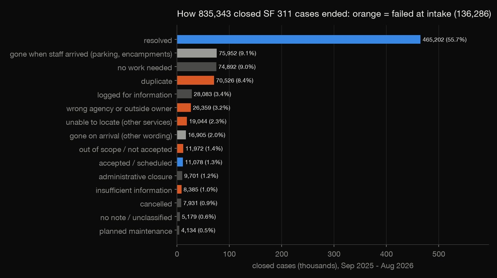
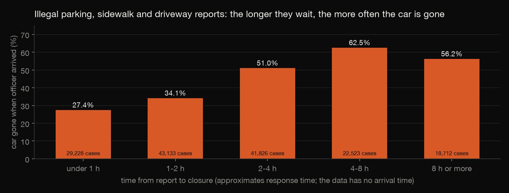
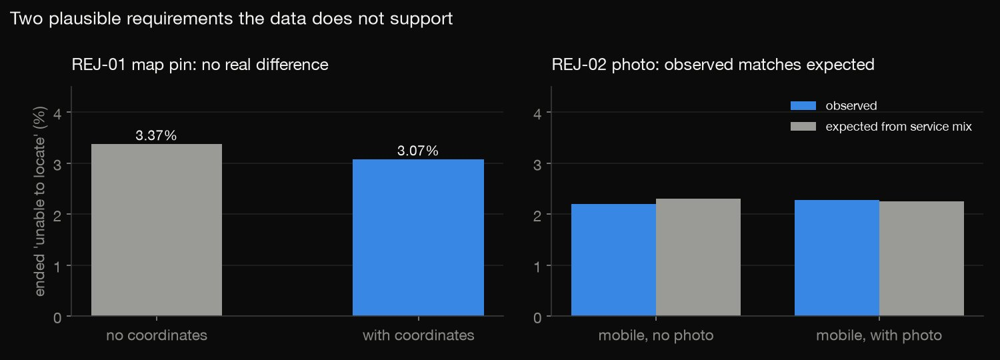
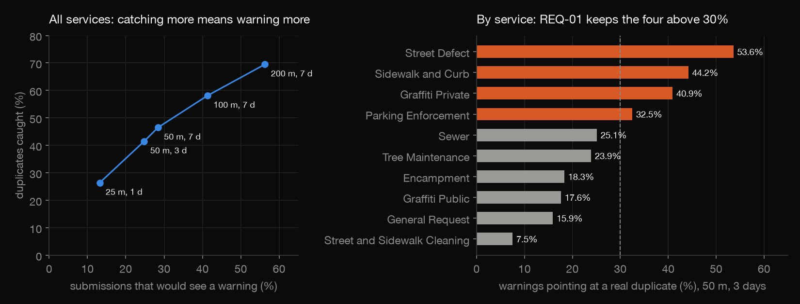
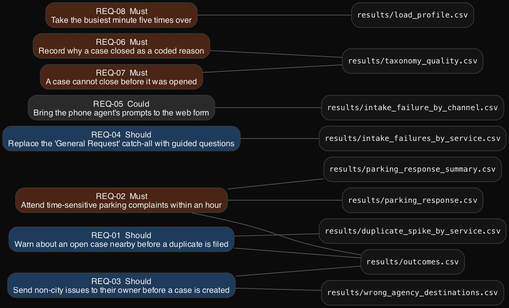
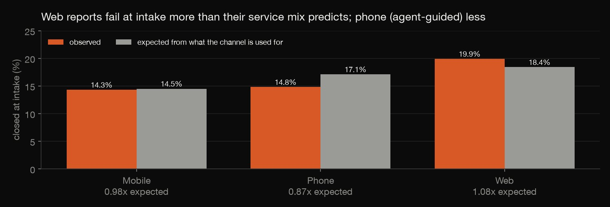

Requirements analysis · SQL · 2026-10
SF 311 Intake Requirements
Requirements analysis for San Francisco's 311 front door, built from a year of real cases: where intake fails, which fixes the data supports, and eight requirements with acceptance criteria, each traced to its evidence.

An independent portfolio project: San Francisco did not commission it and no stakeholders were interviewed. Needs come from the data and the City's own closure notes, and every target is a proposal.
01 — The problem
San Francisco's 311 service takes about 870,000 reports a year through an app, a web form and the phone. Many reports never get the issue fixed: they are duplicates, sent to the wrong agency, or closed because nobody could find the problem.
A requirements analyst's job is to say what the next version of the intake should do, and to prove it. Which failures are worth fixing at the front door? Which tempting fixes would not help? How will we know a fix worked?
02 — What I built
An evidence-first requirements set, built from 12 months of cases (September 2025 – August 2026, 872,450 cases):
- A closure taxonomy: 14 ordered rules that turn free-text closure notes into outcomes, classifying 99.38% of closed cases.
- Evidence queries for each candidate requirement, including a duplicate-warning spike tested at five settings.
- 8 requirements and 3 rejected candidates in one YAML file. Each has a problem, a statement, acceptance criteria, a proposed target and cited evidence.
- Generated outputs: a requirements document and a traceability matrix. The build refuses to run if any cited number drifts from its results file.
03 — How it was built
- 01
Freeze one year of cases
DataSF's 311 dataset updates nightly and open cases keep changing, so the analysis runs on one frozen snapshot (1 October 2026). Paging through the whole year in one query made the API stall for nearly half an hour. One request per month, four at a time, took about two minutes.
625 test cases and 1,458 with no channel recorded are dropped and counted. The rows carry addresses, so they are never committed; only aggregates are.
"""One request per month: deep $offset paging over the whole year made the API stall for many minutes.""" - 02
Turn closure notes into outcomes
How a case ended is recorded only as free text: 243,054 different notes in a year. Fourteen ordered rules (first match wins) sort closed cases into outcomes, and the outcomes into groups. Intake outcomes are the ones a better front door could prevent: duplicate, wrong agency, unable to locate, out of scope and insufficient information.
One trap needed care. "Unable to Locate" closes 37% of parking cases and 24% of encampment cases, but there it means the car or the people had left, not that the location was wrong. For those two services it counts as "gone when staff arrived".
2,unable to locate.*(no encampment|area verified clean),gone_on_arrival,moved_on - 03
Measure the evidence for each candidate
Each candidate requirement gets a query that could prove it wrong:
- Response time: for illegal-parking, sidewalk and driveway complaints, the share of cars gone rises from 27.4% when a case closes within an hour to 62.5% at 4–8 hours. Only 18.8% close within an hour.
- Channels: compared with what each channel is used for, web reports fail at intake 1.08 times as often as expected. Phone reports, where an agent asks the questions, fail 0.87 times as often.
- Location and photos: a missing map pin (3.37% vs 3.07% unable to locate) and a missing photo make no real difference, so neither becomes a requirement.


AND subtype IN ('other_illegal_parking', 'parking_on_sidewalk', 'blocking_driveway_cite_only', 'blocking_driveway_cite_tow') - 04
Spike the duplicate warning before specifying it
70,526 cases closed as duplicates. Could the form have warned the reporter? The rule may use only what is known at submission: an earlier case of the same type, within a set distance and time, still open at that moment.
Across all services, catching more duplicates means warning more people. At 50 m and 3 days the rule catches 41.5% of duplicates but warns on 24.8% of submissions. By service the picture splits. Over 30% of warnings point at a real duplicate in four services, but only 7.5% in street cleaning, where busy blocks have many separate piles of rubbish. So the requirement covers those four services only.

AND (e.closed IS NULL OR e.closed > n.requested) - 05
Write the requirements, and make them check themselves
All requirements live in
requirements.yaml. Each one has a problem, a "shall" statement, acceptance criteria, a proposed target, a MoSCoW priority and cited evidence: a results file, a row, a column and a value.spec.pybuilds the document and the traceability matrix, and refuses to run if:- a cited value differs from its results file;
- a count in a problem statement isn't one of the cited values;
- an acceptance criterion is neither a Given/When/Then scenario nor a measured threshold.
It stopped the build several times while I wrote: three numbers used without being cited, one that went stale after a bug fix, and two acceptance criteria that weren't testable.

assert abs(got - ev["value"]) < 1e-9, (item["id"], ev, got) - 06
Recompute the evidence a second way
Checking requirements against results files is not enough if the results are wrong.
check.pyrecomputes them in pandas from the raw pull:- the 14 rules, re-applied with Python's regex engine;
- the parking curve, the data-quality count and the busiest minute;
- the spike's fast grid join, against a brute-force distance check on 400 random cases.
It found a real bug. DuckDB's
date_diff('minute', …)counts minute boundaries crossed, not elapsed time, so a 57-second wait could count as a minute.assert bool((d <= 50).any()) == (n["id"] in flagged), n["id"]
04 — Results
Where intake fails. 136,286 closed cases (16.3%) ended in ways a better front door could prevent:
| Outcome | Cases |
|---|---|
| Duplicate | 70,526 |
| Wrong agency | 26,359 |
| Unable to locate | 19,044 |
| Out of scope | 11,972 |
| Insufficient info | 8,385 |
The requirements (full text, acceptance criteria and evidence are in docs/requirements.md):
- REQ-01, Should: warn about an open case nearby before a duplicate is filed, in four services (baseline 28,040 duplicates a year there).
- REQ-02, Must: attend time-sensitive parking complaints within an hour for half of requests (baseline 18.8%), and record arrival time.
- REQ-03, Should: send USPS, PG&E, State and police non-emergency issues to their owner before a case is created (9,364 a year).
- REQ-04, Should: replace the "General Request" catch-all, where 43.1% of cases fail at intake, with three guided questions.
- REQ-05, Could: A/B test the phone agent's prompts on the web form.
- REQ-06, Must: record a coded closure reason; today there are 128,370 ways of writing "resolved".
- REQ-07, Must: a case cannot close before it was opened (1,451 do).
- REQ-08, Must: accept 530 submissions a minute, five times the busiest minute of 106.
Rejected with evidence: a mandatory map pin, a mandatory photo, and a duplicate warning for street cleaning.

05 — What I'd do next
- Validate the problems with the people involved: 311 agents, Public Works crews and SFMTA parking officers.
- Prototype the duplicate warning and the outside-owner routing, then usability-test them.
- Re-measure every baseline on the next year's data to see which targets moved.